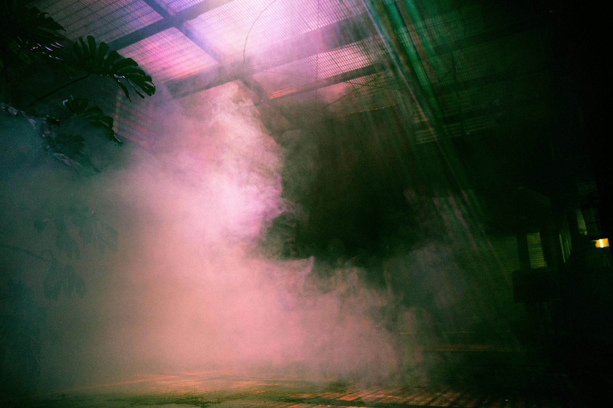

Artist · Curator · Light designer
Light, space & immersive experience.
Immersive installations and light works exploring perception, presence, and the thresholds between the physical and the digital.
Selected works
All projects →
About
Jaco Schilp (1989) is a contemporary artist, curator and light designer, specialised in multidisciplinary projects within immersive art, installation art, performance and animation. Studio Schilp was once his grandfather's photo studio; the light stayed in the family.
More about the studio →